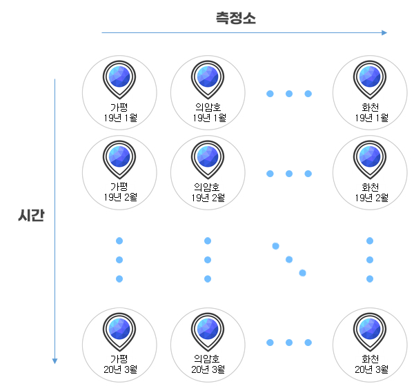

이용 방법
수질 예측 시스템
이용 방법
유역 선택
예측하고 싶은 유역(한강, 낙동강, 금강, 영산강)을 선택합니다.
항목 선택
예측하고 싶은 항목(용존산소, 총유기탄소, 총인, 총질소, 클로로필-A)을 선택합니다.
날짜 선택
예측하고 싶은 날짜를 선택 합니다.
예측하기
선택한 유역, 항목, 날짜로 하여금 예측을 진행합니다.
결과 확인
예측된 결과로 선택한 유역, 항목, 날짜의 그저께부터 모레까지의 결과를 차트 및 그래프로 나타냅니다.
샘플데이터 수동 업로드 방법
샘플데이터는 예측하기를 통해 진행을 하실 수 있으며, 예측하기의 항목에 수동 Data 업로드 버튼을 누르시면 샘플데이터버튼이 생성되며 누르시면 내려받기가 가능합니다. 본 수질예측 서비스에서는 제공되는 샘플데이터 형식으로 변경하여 이용 가능합니다.
샘플데이터 형식
측정소별 횡단, 시간은 종단으로 되어있는 데이터셋으로 이루어져있습니다. 아래 그림은 한강 유역을 예시로 표현되었습니다.
각 측정망별 컬럼의 형태
| 날짜 | 수온 | 수온이온농도 | 용존산소 | 전기전도도 | 총유기탄소 | 총질소 | 총인 | 클로로필-A | Day sin | Day cos | Year sin | Year cos |
|---|
| 날짜 | 유량 | 수온이온농도 | 용존산소 | 총질소 | 총인 | 클로로필-A | 총유기탄소 | Day sin | Day cos | Year sin | Year cos |
|---|
| 날짜 | 수온이온농도 | 용존산소 | 총질소 | 총인 | 클로로필-A | 총유기탄소 | Day sin | Day cos | Year sin | Year cos |
|---|
| 날짜 | 용존산소 | 총인 | 클로로필-A | Day sin | Day cos | Year sin | Year cos |
|---|